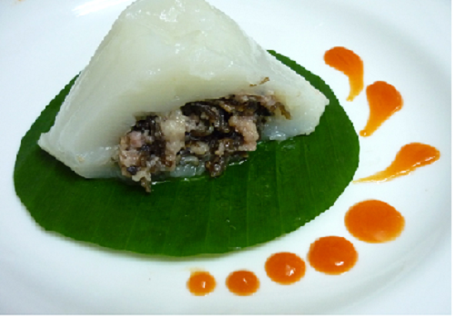

Có thể nói không ngoa rằng, bánh giò Bến Hiệp (Quỳnh Phụ, Thái Bình) có thể sánh vai cùng bánh cáy làng Nguyễn, bánh gai Vũ Thư, bánh bèo Thái Thụy, bánh đúc làng Tè. Với mẫu mã, dư vị rất riêng, nó đã và đang khẳng định được giá trị, vị trí trên thị trường trong và ngoài tỉnh. Chẳng biết, loại bánh giò làm bằng bột tẻ ăn không thấy ngán, ăn lót dạ được, ăn thay cơm, ăn đổi bữa được, từ đời nảo đời nào truyền đến tận nay, người ta chỉ biết rằng, dạo trước, tàu thủy Hải Hà chạy ngày hai chuyến Hải Phòng-Nam Định, Nam Định-Hải Phòng khi mà Bến Hiệp lấy trả khách, bốc dỡ hàng hóa, mọi người đã rất quen mắt với cảnh nhiều phụ nữ trẻ em mang bánh giò ra bán.